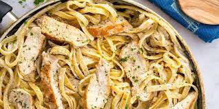

Protein Chicken Alfredo

This is a wonderful recipe that tastes exactly like regular
Fettuccini Chicken Alfredo but is packed with much more Protein
and has less calories. Amazing meal for someone who loves pasta and gains.
Ingredients
- Cooked Barilla Protein pasta
- Cooked Tyson Chicken Breast
- 1 cup Cottage Cheese
- 1/2 cup Skim Milk
- 1/2 cup Grated Parmesean
- 1 tablespoon Corntarch
- Garlic Powder
- Black Pepper
- Basil
- Oregeno
Steps
Its so easy!
- Put all the ingredients, except basil, into a food processor or blender and blend until smooth.
- Pour the mixture in a small saucepan and add basil and oregano. Cook over medium-low heat until heated through and smooth. Add more basil, oregano, salt, or pepper (or other seasonings), to taste.
- Let it cook on low heat for about 5 minutes, stirring occasionally. Add the cooked pasta right before serving and let it soak in for a couple of minutes.
Top with the cooked chicken breast; garnish with fresh chopped parsley, optional. Serve immediately.